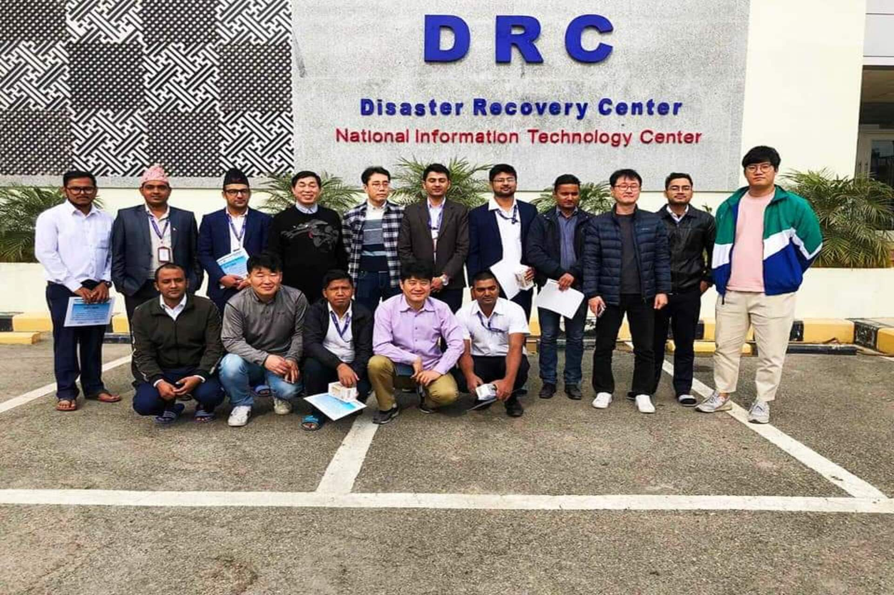

Infrastructure Operations & Data Center Support
Hands-on experience supporting enterprise infrastructure across multiple data centers, with a focus on uptime, resilience, hardware operations, and operational stability.
Project Snapshot

Core Areas
- Operational support across data centers
- Hardware deployment and relocation
- Structured cabling and rack work
- Availability and failover readiness
- Coordination across infrastructure domains
Overview
This work focused on supporting enterprise infrastructure across geographically separated data center environments. The objective was to maintain service continuity, support mission-critical systems, and ensure infrastructure remained stable, organized, and recovery-ready.
The role required hands-on involvement at both the physical and operational levels, including server deployment, relocation, rack organization, support coordination, and maintaining readiness across primary and disaster recovery environments.
What I worked on
Operational Infrastructure Support
- Supported enterprise systems hosted across multiple data center locations
- Helped maintain service continuity and day-to-day infrastructure stability
- Worked in environments where uptime and reliability were critical
Hardware Deployment and Relocation
- Assisted with physical installation, relocation, and reorganization of hardware
- Performed rack mounting, cable routing, labeling, and structured layout work
- Reduced operational risk by maintaining organized and maintainable rack environments
Disaster Recovery Readiness
- Supported infrastructure across primary and disaster recovery sites
- Worked with recovery-oriented setups that emphasized redundancy and continuity
- Contributed to environments designed for resilient service delivery
Cross-Functional Coordination
- Worked with infrastructure, systems, networking, and operations teams
- Supported change execution in controlled production environments
- Helped align physical infrastructure tasks with service availability goals
Technologies and Environment
What this experience demonstrates
- Strong foundation in infrastructure operations and physical data center work
- Comfort working in uptime-sensitive production environments
- Ability to support both operational and organizational aspects of infrastructure
- Good understanding of resilience, continuity, and recovery-oriented planning
- Practical experience that supports progression into DevOps and platform roles
Why it matters in my career path
This experience gave me strong operational discipline and a practical understanding of how reliable infrastructure is delivered and maintained. It forms an important part of my transition into DevOps, where automation and modern delivery pipelines still depend on the same core principles of stability, availability, and structured systems thinking.